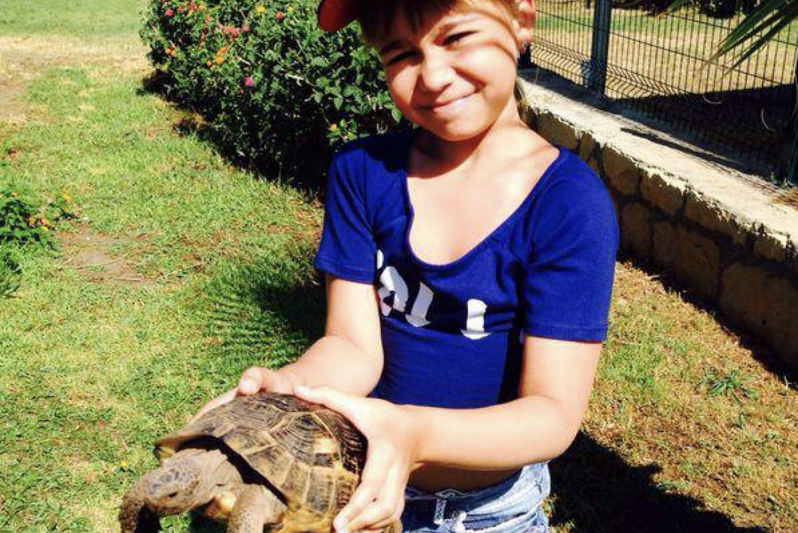

Привет!! Сәлем!! Hello!!☺
Меня зовут Алёна. Здесь я собрала немного информации из разных сфер и разных периодов моей жизни,
надеюсь, вам будет интересно почитать и вы узнаете меня хотя бы чуть-чуть лучше! ☼
Основная информация
- ФИО:
- Шинкарева Алёна Игоревна
- Возраст:
- 19 лет
- День рождения:
- 4 ноября 2004 год
- Знак зодиака:
- скорпион
- Место рождения:
- Казахстан, город Алматы
Я родилась в Алматы, городе, окруженном горами, в Республике Казахстан. Когда мне было 14, моя семья переехала в Россию, в южный город Ростов-на-Дону, где я жила до 17 лет, а потом поступила в университет ИТМО и переехала в Санкт-Петербург, где я сейчас и живу. Несмотря на то, что у меня русская семья, я очень люблю казахскую культуру и убеждена, что она точно оказала влияние на то, какая я сейчас.
Семья
Моих родителей зовут Анна и Игорь. Я очень благодарна им за прекрасное детство, за любовь и поддержку,
которую чувствую от них каждый день вот уже почти 20 лет.
Когда мне было 8, у меня родился младший брат. У нас с ним всегда были и есть очень теплые отношения, он
очень крутой и смешной!
А вообще мои родственники живут в разных точках Евразии, поэтому видимся мы не так часто, как хотелось
бы, но всегда на связи!
Образование
Школьные годы
Как я уже сказала ранее, до 14 лет я жила в Казахстане, соответственно, до середины 8 класса я
училась там.
Несмотря на это, только в 5 классе, когда сменила школу, я начала хорошо понимать казахскую речь и
неплохо разговаривать на казахском.
Сейчас, к сожалению, я очень сильно забыла казахский, но когда-нибудь точно вернусь к изучению этого
языка!
Всу 11 классов я очень-очень сильно любила математику, училась в физико-математических лицеях,
всегда знала, что моя профессия будет технической.
Когда в 10 классе пришло время решать, что я буду сдавать на ЕГЭ, я выбрала информатику из-за того,
что это один из немногих предметов,
где не нужно ничего заучивать, ну и потом поняла, что хочу быть программистом)
В 11 классе я стала призером и победителем в 8 олимпиадах из перечня РСОШ, что дало мне возможность
поступить в практически любой ВУЗ без конкурса.
Университет
Когда пришло время выбирать, куда же я хочу поступить, мне было довольно сложно принять решение.
Поэтому на протяжении нескольких месяцев я общалась с ребятами из разных университетов, спрашивала,
как им учеба, что им нравится/не нравится и приняла решение поступить в ИТМО.
И вот, я уже на 3 курсе и ни разу об этом не пожалела!
Кроме того, 2 лета подряд я работала в приемной кампании моего факультета, помогала абитуриентом с
вопросами поступления,
потому что мне очень хочется рассказать об ИТМО школьникам и показать, что это действительно
прекрасный университет!
Some random facts
| В детстве у меня были разные домашние животные: улитки ахатины, скорпион, тарантул, хомячки, кошка и два кота |  |
| Участвовала в юнармии в школьные годы, умею на скорость собирать и разбирать автомат, ставила рекорд по району -- 20 секунд. | |
| Хочу получить права, но очень боюсь сбить кого-нибудь или попасть в аварию :( |  |
| За несколько дней до 1 сентября, играя во дворе, я со всей скорости влетела в столб, поэтому звенела в колокольчик на линейке с фингалом |  |